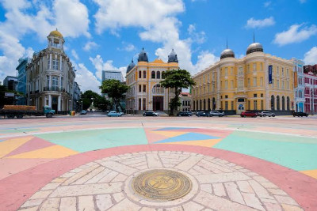
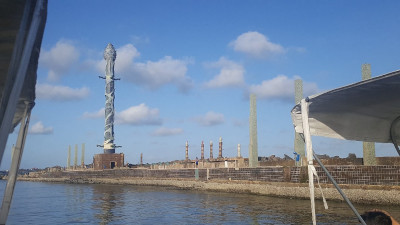
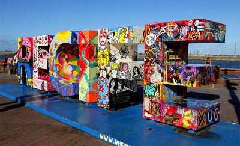

Praça Rio Branco
A Praça Rio Branco, também conhecida como Marco Zero, é um espaço público localizado no bairro do Recife da cidade homônima, capital de Pernambuco. O local fica próximo ao Porto do Recife e abriga o Marco Zero da cidade do Recife (instalado em 31 de janeiro de 1938, pelo Automóvel Clube de Pernambuco). É deste marco que são feitas todas as medidas oficiais de distâncias rodoviárias locais. Oficialmente denominada de Praça Barão do Rio Branco, fica localizada na Av. Alfredo Lisboa conectada às ruas Marquês de Olinda, Rio Branco e Barbosa Lima.
O norte da praça é banhado pelo estuário do porto do Recife, formado pelo Rio Capibaribe. O estuário é protegido por um dique natural, local em que se encontra o Parque das Esculturas com a famosa obra Coluna de Cristal de 32 metros de altura e inspirada em uma flor descoberta por Burle Marx e varias outras obras em cerâmica do artista Francisco Brennand. No dique encontra-se também a Casa de Banhos, que não existe mais, e o Farol do Recife.
História
O Bairro do Recife - ou simplesmente Recife Antigo -, começou a ser construído após a retomada do território dos holandeses pelos portugueses no século XVII. A ideia era reurbanizar o bairro de São José, que era um porto de pescadores e se tornou uma vila, logo virando um bairro residencial do Recife. Foi redesenhado após a abertura da Av. Marquês de Olinda e a Av. Rio Branco, cortando a ligação que existia entre o bairro e a cidade irmã de Olinda.
O artista pernambucano Cícero Dias, baseado no traço
arquitetônico francês, em uma de suas maiores criações, idealizou um
projeto baseado nas suas memórias afetivas e chamou essa concepção de:
Eu vi o mundo, ele começa no Recife
, uma referência ao tempo
que viveu na França e retornou a Veneza Brasileira
.
Dias, um dos pioneiros do movimento modernista já no século XX, desenhou uma rosa dos ventos com cerca de 40 metros quadrados construída por quartzitos, granitos e formas geométricas que dão vida a imaginação. A cidade de sobrados e ruas estreitas passou a olhar o horizonte a partir de uma praça que representa o ponto de encontro de ruas que apontam para as mais diversas direções, formando um leque aberto. Surgiu então o Marco Zero do Recife.